企企 · 服务业 AI·ERP
企企科技实践交流会
2026.06
两大议题 · 场景化落地实践
Agenda
| 主题 | 内容 |
|---|---|
| 数智化企业架构 | 企企 AI 平台设计与 AI 功能架构；核心 AI 能力场景化产品演示（企企智客） |
| AI 数据洞察 | 企企在数据智能方向的技术探索与应用实践 |
AI 不是给企业软件加一个聊天框——而是理解业务进展、发现缺口，并把可信的下一步推到人面前。
Ⅰ
企企 AI 平台设计与产品演示 · 企企智客 / AI CRM
CRM · 客户困境
员工不愿意录系统——开电脑、找字段、补记录太麻烦
过程信息沉淀不下来——沟通、会议、跟进发生在系统外
系统不给一线下一步建议——只堆记录，不推动动作
变成管理者监督工具——员工抵触大，落地效果差
AI 要进入业务发生的场景——不是在事后补表，而是在沟通、跟进、会议发生时理解、沉淀，并推动下一步。
从「管理者监督工具」→「一线也能用得上的业务助手」
CRM · Value 01 · 回扣痛点 ①②
销售日常 维护 CRM 最大的阻力是太麻烦——开电脑、找字段、填表、补记录。
产品截图 · 点击放大
CRM · Value 02 · 回扣痛点 ③
信息录进来只是第一步——AI CRM 与普通 CRM 的根本差异在这里。
这句话对商机有什么影响？
是否出现新需求或购买意向？
是否承诺了下一步？客户态度是否变化？
是否该补联系人、建任务、更新判断？
产品截图 · 点击放大
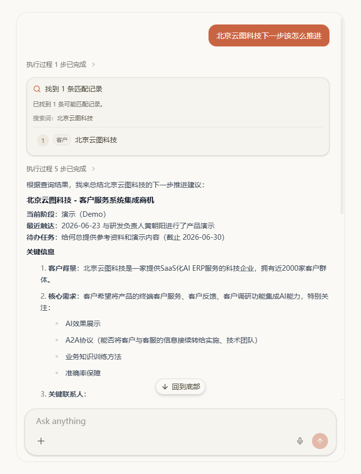
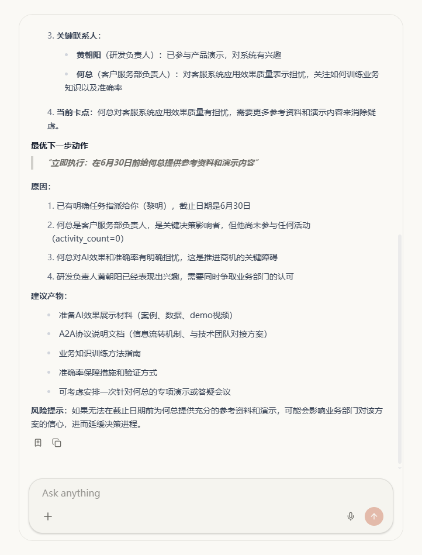
CRM · Value 03 · 回扣痛点 ④
销售管理 顶级销售的方法往往在脑子里——什么时候追问预算、找决策人、推进试用、让售前介入。
产品截图 · 点击放大
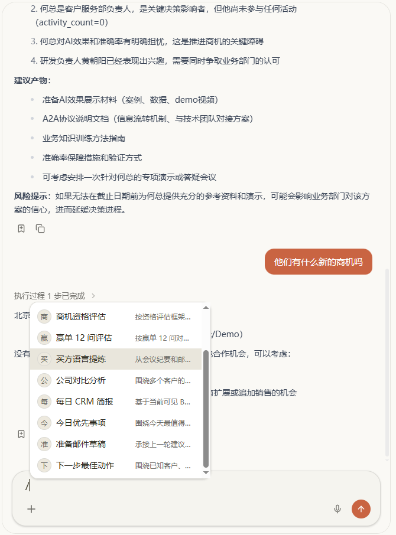
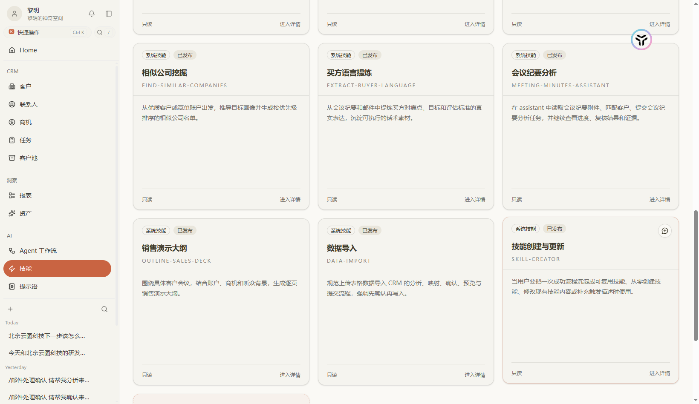
CRM · Value 04 · Landing
这封邮件要不要立刻回复？
纪要里有哪些承诺和风险？
商机能否进入下一阶段？
今天优先跟进谁？
下面进入产品演示——用一条业务链看四层价值如何连在一起。
Demo
合作邮件跟进场景 · 现场操作
合作意向邮件 → 对方约演示 → 内部任务与资料准备 → 回复确认 → 会议纪要 → 客户态势追问
演示流程 · 点击放大
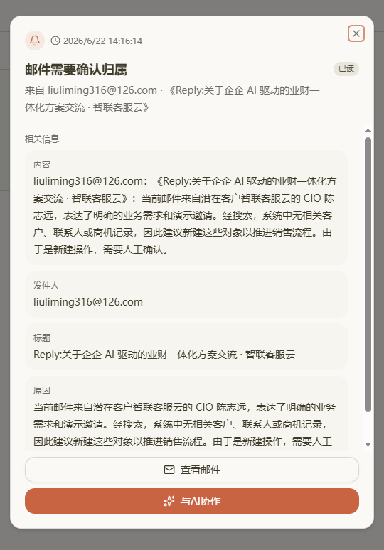
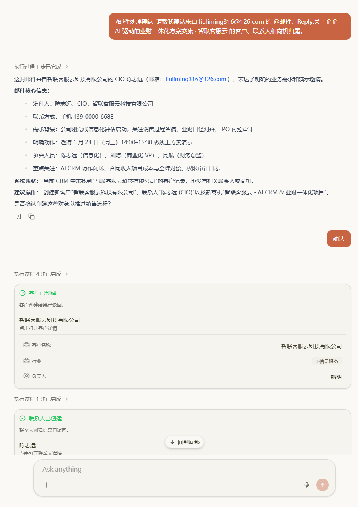
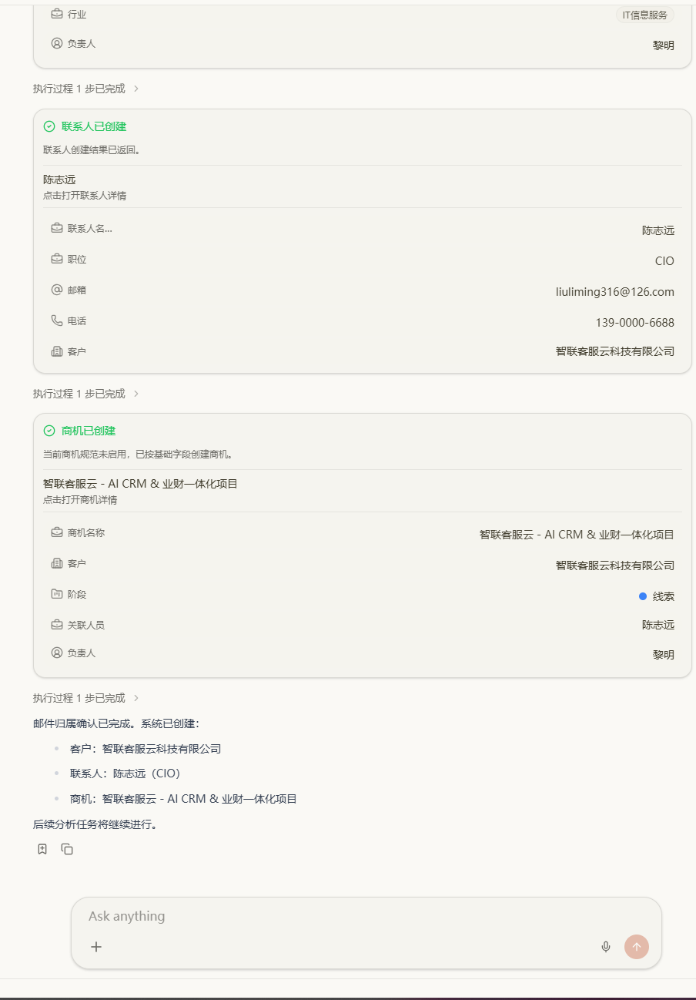
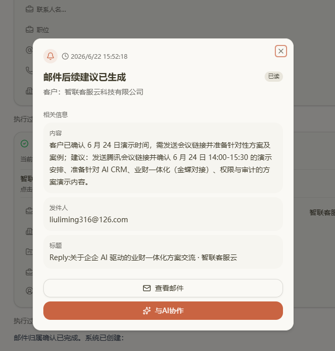
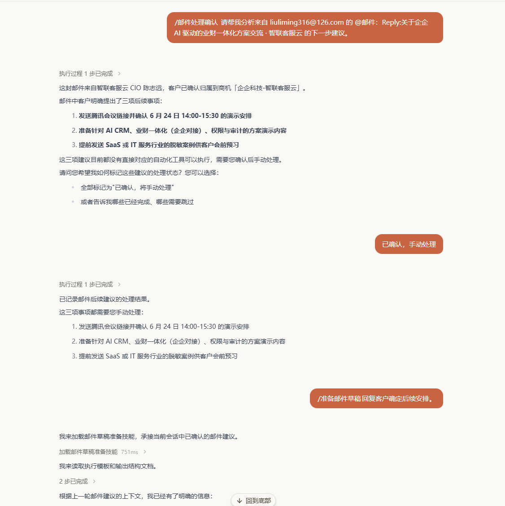
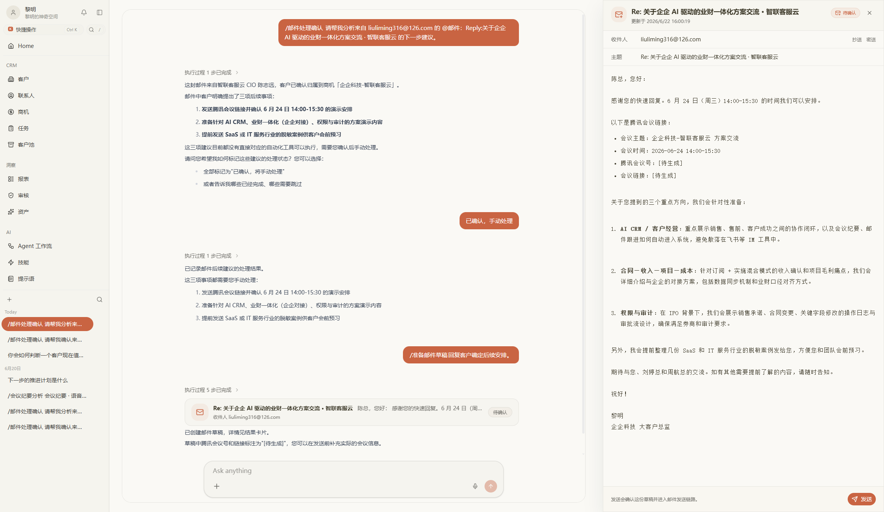
CRM · Demo recap
邮件、沟通、纪要进入 CRM，AI 自动整理为客户、商机、任务。
不是事后补结果字段——跟进过程进入同一业务上下文。
从记录中读出承诺、风险与下一步——推送任务与建议，不是单点问答。
优秀打法变成团队可用的教练与工作流——帮普通员工做判断。
Platform · Tech Stack
邮件 · 纪要 · 企微 / 消息接入
Webhook · 业务对象映射 · NL 录入通道
邮件解析 · 纪要提取 · 业务信号识别
图像识别 · 语音识别 · 业务上下文 · 结构化输出
邮件回复 · 任务创建 · 资料更新
HITP 人机协作 · 权限校验 · 操作审计
工作台 · 客户 / 商机页
待办与建议实时推送 · 领域组件 · 人机共享状态
租户 · 角色 · 数据权限
多租户隔离 · 功能/资产控制 · 审计日志
销售教练 · 领域 SOP
AgentSkill · 规则引擎 · 可复用 Workflow
Ⅱ
企业数据智能的探索与应用
Insight · Question
经营管理者 这个季度收入看起来增长了，但利润没有同步变好——到底是哪些客户、项目、产品或部门在拉低毛利？
核心不是「有没有报表、能不能看图」——而是经营数据能否围绕当期管理问题被重新组织、被解释、被追问，并且让分析逻辑沉淀下来、下次还能复用。
Insight · Context
| R0 追问层次 | 企企 ERP 已提供 | 经营分析中的缺口 |
|---|---|---|
| 哪些在拉低毛利？ | 合同、项目、收入、成本、费用等已归集 | 难按当期管理问题灵活组合呈现 |
| 为什么利润没跟上？ | 各模块各有统计口径与标准报表 | 口径、维度、分析目标靠人对齐，结论难复查 |
| 下次还会问类似问题吗？ | 分析师个人经验可临时出结论 | 分析过程难沉淀为团队可复用资产 |
瓶颈不在录入——数据已在系统中；缺口在围绕管理问题的组织、解释、追问与复用。
Insight · With AI
构建稳定、可复查的分析数据集——不是一次性给结论文本
数据集建好之后，可直接与 AI 协作探索、反复追问——无需每次从头拼数。
Insight · Experience & Value
| 从 | 到 |
|---|---|
| 固定报表、人工导表拼接 | 按管理问题动态组织分析视图 |
| 口径靠人对齐 | AI 协助口径对齐并显式化 |
| 聊天框里一句结论 | 稳定数据 + 可视化建立信任，再支撑根因 |
| 每次分析从头来过 | 技能与工作流持续复用 |
数据处理逻辑沉淀为稳定数据源——认知信任，而非黑箱结论。
图表、看板、筛选与下钻——高效直观，敢看、敢用。
稳定数据之上根因追问；处理流与分析技能持续复用。
回扣 R0：增收不增利 → 下钻到项目/成本项 → 分析逻辑沉淀，下月直接启用
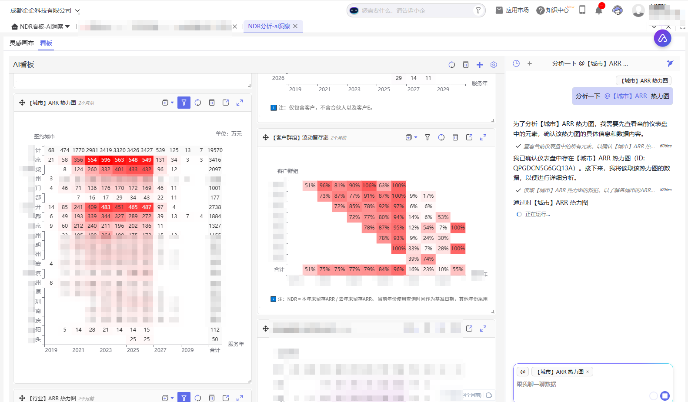
同类能力可服务于客户健康度、续约分析等——ARR / NDR / CLTV 同理。
Platform · Insight stack
多源拼数 · 受控编排
构建稳定、可复查的分析数据集
找准数据 · 血缘追查
问题分析 · 根因下钻路径
表格 · 图表 · 动态组件
分析工作面 · 人机共享状态
权限隔离 · 多维度参数查询 · 动态图表呈现
从数据切片组织视图——高效直观，建立认知信任（非聊天框一句结论）
处理逻辑 · 分析范式沉淀
持续复用 · 下月直接启用
稳定数据之上 · 归因 · 追问
在已构建、已可视化的资产上高效根因分析与信息补充
Insight · Practice
认知：LLM 代码能力已足够强，不必再堆配置模型
图表构建由 Agent 生成配置，而非构建配置模型；数据处理写代码完成；PaaS 平台脚本亦由 Agent 生产。
认知：Harness 的价值在治理与连接，不在替模型套死流程
做好边界与上下文控制，充分释放模型能力——避免固化流程、把模型困在既定套路里。
认知：软件 3.0 时代，效果取决于模型能力与工程构建
模型高频更新，工程需持续适配——效果观测与质量飞轮极其重要，上线不是终点。
坑：做成「更大号聊天框」、更复杂的固定报表，或低代码配置堆叠
解法：让 AI 进入真实业务过程——领域交互、数据切面、受控执行；关键动作人确认，能力与经验持续沉淀。
Closing
AI 进入业务发生时的场景——理解、沉淀，受控推进下一步
围绕管理问题组织经营数据——识别意图、构建数据集、追问复用
一头连接真实业务过程，一头让经营判断可看清、可追问、可沉淀——可治理、可持续增长
专注服务业，用 AI 助力企业增长
谢谢 · 欢迎交流
{kind=link}
{kind=link}
{kind=link}
{kind=link}
{kind=link}
{kind=link}
{kind=link}
{kind=link}
{kind=link}
{kind=link}
{kind=link}
{kind=link}
{kind=link}
{kind=link}
{kind=link}
{kind=link}
{kind=link}